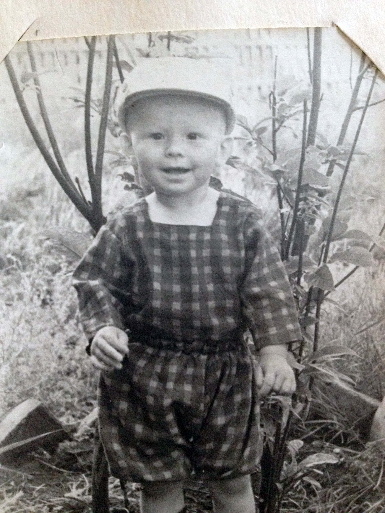
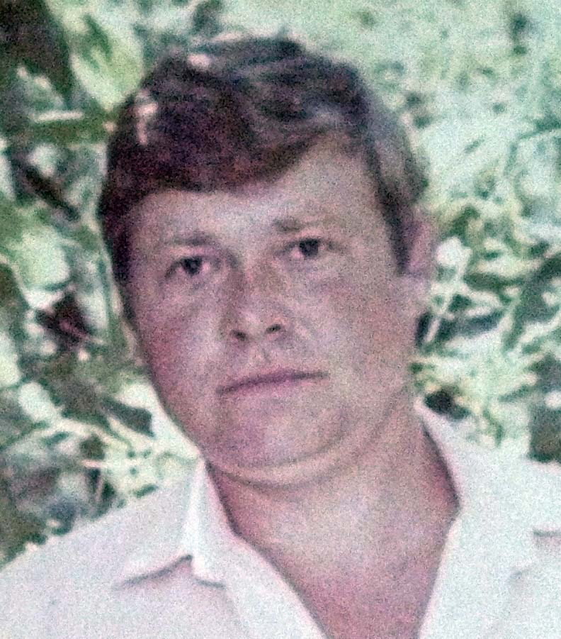

Возраст: 63
Место жительства: г. Лесосибирск
Основное занятие: Врач скорой помощи
Телефон: 89029923476
1975г. окончил школу №16 г.Абакана.
1975-1976гг. Медрегистратор Хакасской областной больницы.
1976-1982гг. Студент лечебного факультета КрасГМИ.
1982-1983гг. Врач интерн акушер-гинеколог.
1983-1984гг. Врач скорой помощи Кировской подстанции СМП г. Красноярска.
1984-1986гг. Заведующий Кировской подстанции СМП г. Красноярска.
1986-1991гг. Главный врач Лесосибирской СМП.
1991-2013гг. Врач скорой помощи г. Лесосибирска.
с 2013 года работает заведующим социально-реабилитационным отделением центра социального обслуживания населения г. Лесосибирска.
Отец: Галинов Максим Константинович (06.05.1929 - 19.09.2017)
Мать: Галинова (Трунилина) Тамара Петровна (04.08.1932 - 29.02.2004)
Брат: Галинов Алексей Максимович (26.05.1949 - 11.04.2001)
Брат: Галинов Владимир Максимович (22.02.1964 - 13.01.2017)
Жена: Галинова (Василенко) Татьяна Николаевна (21.01.1957)
Дочь: Герилович (Галинова) Людмила Александровна (24.06.1982)
Родился: 27.07.1958, г. Минусинск. Отец: Галинов Максим Константинович. Мать: Галинова (Трунилина) Тамара Петровна.
Родилась дочь: Герилович (Галинова) Людмила Александровна, 24.06.1982, г. Абакан. Мать: Галинова (Василенко) Татьяна Николаевна.
Женился. Жена: Галинова (Василенко) Татьяна Николаевна.
. . |